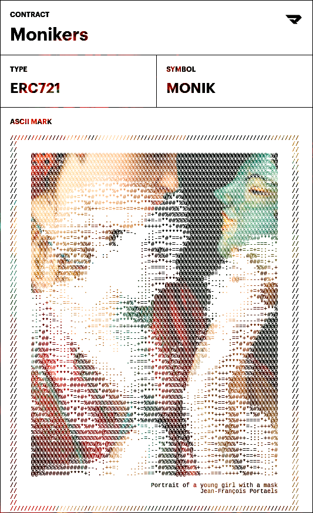

In this digital age, it is easy to create and maintain multiple online personas, or "monikers". These monikers allow us to present different versions of ourselves to the world, and to experiment with multiple identities.
The Monikers series explores the duality of online identity. Examining both the freedom and fluidity it offers, as well as raising questions about authenticity and the tension between our online and offline behaviors.
Ultimately, the Monikers series aims to spark a conversation about the complexities of online identity and to challenge the role of technology in shaping our sense of self.
The Monikers series explores the duality of online identity. Examining both the freedom and fluidity it offers, as well as raising questions about authenticity and the tension between our online and offline behaviors.
Ultimately, the Monikers series aims to spark a conversation about the complexities of online identity and to challenge the role of technology in shaping our sense of self.
Community through technology
This work represents the idea of a group of individuals coming together to achieve something that they could not have accomplished on their own. How technology and digital spaces help facilitate these collective efforts in ways never before possible. This artwork, with all its digital paint strokes, depth and texture, would not exist in this way if all those faces weren't there together.
Created using Blender and Midjourney.
Stored on Arweave.

0xF46f4e1205F2
5E57fF646a7142
07A183E382E0E3
5E57fF646a7142
07A183E382E0E3